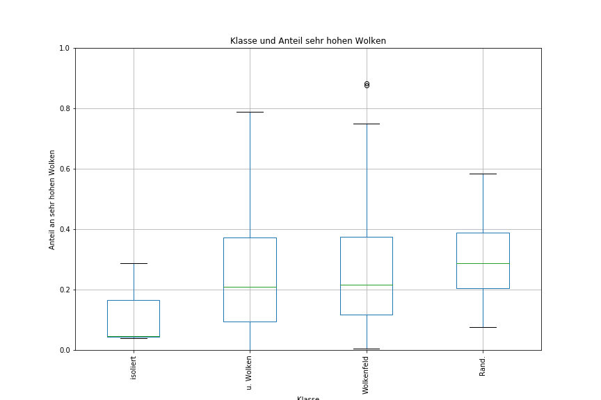

1 Einleitung und Zielsetzung¶
- SATCAST-Algorithmus funktioniert theoretisch hat aber hohe FAR
- Vorhersagezeit gegenber Radar relativ kurz
- Idee: Untersuchung vieler Flle (1 a, 10 a?) um Schwellwertstze fr verschiedene Fallkategorieren abzuleiten
- Ziele:
- Unterschiede zwischen Fllen besser verstehen
- Bewertung bei wievielen Fllen der Satellit einen sinnvollen Beitrag zur CI-Erkennung liefert
- Verbesserung der Vorhersage
2 Fallauswahl¶
- basierend auf RADOLAN-RX (Haberlie-Ansatz)
- CI-Zeitpunkt := Zeitpunkt mit erstem Mal Z ≥ 35 dBZ
- Mindestlebenszeit = 30 min
- Erzeugung fr 2008 bis 2017 (273 169 Flle)
- weitere Filterung:
- maximale Ausgangsflche: 100 px2 → Vermeidung von stratiformen und frontalen Objekten
- minimale Flchenzunahme ber Zeit: 200 px2 → Vermeidung von nichtmeteorlogischen Objekten
- Mindestverhltnis von 20 dBZ- zu 30 dBZ-Flche von 0,3 → Vermeidung von grerflchigen Niederschlagsgebieten mit eingelagerten Bereichen mit strkerem Niederschlag
- nach Filterung noch 8341 Flle
3 Satellitenbasierte Einteilung der ausgewählten Fälle¶
- Einteilung der verbliebenen Flle um spter die Eigenschaften zu untersuchen
- mgliche Einteilungsgrundlagen:
- Bedeckungsgrad (Hypothese: bei isolierten Fllen, sollte er eher niedrig sein)
- Growetterlage (Hypothese: bei einigen Wetterlagen sollten isolierte Gewitter hufiger sein)
- mittlere Wolkenhhe (Hypothese: da wir den Ausschnitt zum CI-Zeitpunkt betrachten, sollte sie nicht zu hoch sein. Wenn sie hoch ist, sind wahrscheinlich hohe Wolken mit im Spiel.)
- dominanter Wolkentyp (Hypothese: bei isolierten Fllen, sollten wolkenfreie Bereiche dominieren)
- Grauwertkorrelationsmatrixeigenschaften (Hypothese: isolierte Flle sollten einen hohen Kontrast haben un wenig geordnet sein.),
- Anteile von niedrigen, mittleren und hohen Wolken (Hypothese: zum CI-Zeipunkt sollte der Anteil hoher Wolken eher gering sein. Wenn er hoch ist, sind warscheinlich hohe Eiswolken mit im Ausschnitt.)
- nach Entstehungstyp
4 Erste manuelle Einteilung¶
- nur fr Flle des Jahres 2013 (669 Flle)
- Erzeugung NC-Komposit fr 51 px × 51 px - Ausschnitt um Radarobjektschwerpunkt zum CI-Zeitpunkt
- Einteilung in folgende Klassen
| Klasse | Klassennummer | Erluterung | Satellitenindikation |
|---|---|---|---|
| isoliert | 1 | islolierte konvektive Auslsung | gut mglich |
| im Wolkenfeld | 2 | Auslsung in einem lockeren Wolkenfeld | mglich, abhngig von Struktur |
| unter Wolken | 3 | Auslsung unter hohen Wolken | nicht mglich |
| Randentwicklung | 4 | neue Entwicklung am Rand einer bestehenden | mglich |
| nichts | 0 | keine Entwicklung sichtbar | keine |
Ergebnis der Klassifikation¶
- basierend auf NC-Komposit → nur Flle am Tag (405 Flle)
- isolierte Flle: 0.7%
- Flle im Wolkenfeld: 59.8%
- Enwicklungen unter Wolken: 34.1%
- Entwicklungen am Rand von bestehender Konvektion: 5.4%
- mit geeigneter Segmentierung wahrscheinlich isolierte Flle, Flle im Wolkenfeld und Randentwicklungen mglich mit Satellit zu erkennen (65.9% der Flle)
5 Feldeigenschaften zum CI-Zeitpunkt¶
- Bedeckungsgrad
- Anteil an sehr niedrigen, niedrigen, mittelhohen, hohen und sehr hohen Wolken
- mittlere Wolkenhhe
- Eigeschaften der Grauwertkookurrenzmatrix (1-Pixel-Nachbarschaft, horizontal unf vertikal gemittelt) des Ausschnitts: Homogenitt, Zweites Winkelmoment (ASM), Korrelation



mgliche Definion fr isolierte Flle:
- Bedeckungsgrad ≤0,5 (Homogenitt > 0,8)
Definition mit Bedeckungsgrad ergibt 261 isolierte Flle fr 2008 bis 2017
- Definition mit Bedeckungsgrad und Homogenitt ergibt 6 Flle fr 2008 bis 2017
6 Objektdefinition¶
- Anzahl von rein isolierten Fllen fr Zeitraum 2008 bis 2017 recht klein (261 Flle)
- Feldeigenschaften des Ausschnittes nicht sehr aussagekrftig fr konvektives Objekt
- Erweiterung des Datensatzes mit Eigenschaften nicht nur von isolierten Objekten
- Idee: multispektrale Segmentierung ausgehend von der Idee des Severe Storm RGBs
- ΔTB(6,2 m, 7,3 m) < -10 K
- ΔTB(3,9 m, 10,8 m) > 20 K
- ΔBDRF(1,6 m, 0,6 m) > 0,05
- Schwellwerte empirisch anhand von Abbildungen bestimmt
8 Nächste Schritte¶
- objektbasierte Eigenschaften der Tracks (NWC SAF Produkte, SATCAST-Interessenfelder, Growetterlagen) fr 2013
- eventuell Ableitung von Tracktypen